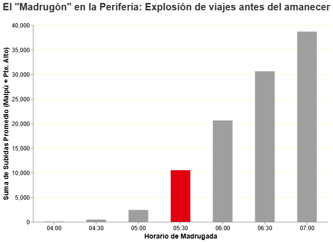

Por Federico Allendes | Proyecto: Santiago a Destiempo
El transporte público en Santiago no se distribuye de manera homogénea en el territorio. A las 05:30 AM, mientras el sector oriente de la capital aún duerme, en las comunas periféricas miles de trabajadores ya están en las calles esperando iniciar su viaje. Sin embargo, la raíz de esta brecha va más allá de una simple falta de máquinas.
La aparente brecha de conectividad no se debe solo a una menor asignación de buses, sino a un modelo que responde mejor a la demanda concentrada (como las estaciones de Metro) que a la demanda dispersa característica de la periferia.

Figura 1: Visualización de datos comparando las subidas de pasajeros y los horarios en la mañana.
Para conocer más sobre cómo se distribuyen los datos abiertos de movilidad, puedes revisar el portal oficial del Directorio de Transporte Público Metropolitano (DTPM).